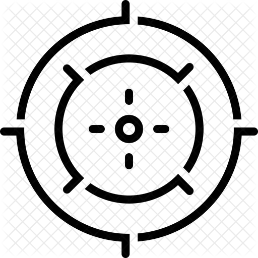

A Propos Du CNAC
Commission Nationale d'Assainissement, et Contrôle de la République Démocratique du Congo
Notre Mission
Proposer au Gouvernement central une politique concertée sur l'encadrement des économies et des intérêts publics, tout en renforçant le trésor public pour assurer un équilibre bénéfique pour tous les citoyens.
Le CNAC s'engage à contrôler les entités économiques qui échappent au fisc, à assainir l'environnement et à protéger les ressources publiques.
Notre Vision
Etre un établissement public de référence en matière d'assainissement, et de contrôle, contribuant à la bonne gouvernance économique et fiscale de la République Démocratique du Congo.
Nous aspirons à créer un environnement où la transparence, l'intégrité et le respect des lois sont les fondations d'une économie prospère et durable.
Nos Valeurs Fondamentales

Rigueur
Nous appliquons les normes les plus élevées dans tous nos contrôles et interventions.
Intégrité
L'honnêteté et la transparence sont au coeur de nos actions et décisions.
Engagement
Nous nous engageons à servir l'Etat et les citoyens avec dévouement.
Structure Organisationelle
Le CNAC est organisé autour de quatre directions centrales qui travaillent en coordinationn pour atteindre les objectifs de l'institution.
Directionn d'Assainissement
Protection de l'environnement et assainissement du milieu public
Responsabilités :
- Assainissement des espaces publics
- Protection de l'environnement
- Sensibilisation communautaire
- Perception de la taxe d'assainissement
Direction des Contrôles
Lutte contre la fraude et les détournements
Responsabilités :
- Contrôle des actes frauduleux
- Lutte contre le faux et usage de faux
- Prévention des détournements
- Imposition des amendes
Direction des Formations
Renforcement des capacités des agents
Responsabilités :
- Formation des agents
- Renforcement des capacités
- Evaluation du comportement
- Développement professionnel
Informations clés
99
Année de duréé institutionnelle
4
Directions centrales
26
Provinces couvertes